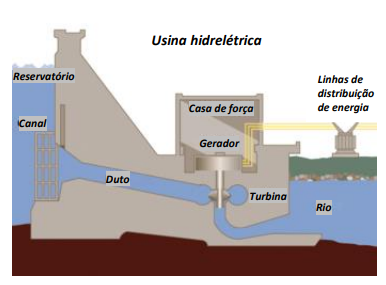
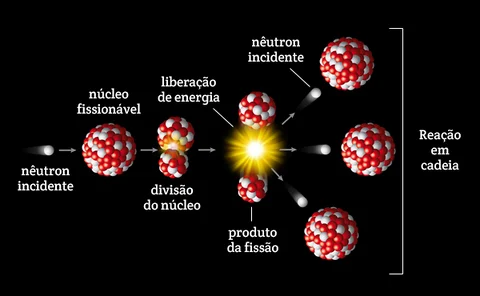
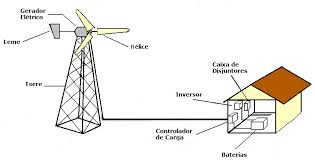
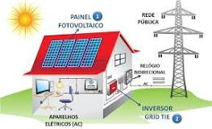

Fisica II - Energia e Astronomia
Fontes de Energia Elétrica
"As fontes de energia são recursos naturais ou artificiais utilizados pela sociedade
para produção de algum tipo de energia em energia elétrica."
Energia hidrelétrica
A energia hidrelétrica corresponde ao aproveitamento da água dos rios para movimentação das turbinas de eletricidade."

Energia nuclear (atômica)
Na energia nuclear – também chamada de energia atômica, a produção de eletricidade
ocorre por intermédio do aquecimento da água, que se transforma em vapor e ativa
os geradores. Nas usinas nucleares, o calor é gerado em reatores a partir da
fissão nuclear do urânio-235, um material altamente radioativo."
U235+neutron = Ba144 + Kr89 + energia + neutron
Urânio(U) se divide em Bário(Ba) e Criptônio(Kr) e neutron


Combustíveis fósseis
A queima de combustíveis fósseis pode ser empregada tanto para o deslocamento de
veículos quanto para a produção de eletricidade em estações termoelétricas.
Os três tipos principais são petróleo, carvão mineral e gás natural"
Biomassa
"A utilização da biomassa consiste na queima de substâncias de origem orgânica
para produção de energia. Ocorre por meio da combustão de materiais como lenha,
bagaço de cana e outros resíduos agrícolas, restos florestais e até excrementos
de animais."
Eólica
O vento é um recurso energético renovável e, portanto, inesgotável. Basicamente,
os ventos ativam as turbinas dos aerogeradores, fazendo com que os geradores
convertam a energia mecânica produzida em energia elétrica.

Energia fotovoltaica
A energia solar fotovoltaica é uma fonte de energia renovável e limpa que utiliza a radiação
solar para gerar eletricidade. Baseia-se no denominado efeito fotoelétrico,
através do qual determinados materiais são capazes de absorver fótons
(partículas luminosas) e liberar elétrons, gerando corrente elétrica.

Questões
1) Quais as fontes de Energia renovaveis?
2) Quais as fontes de Energia não renovaveis?
3) Quais as fontes de Energia Não constantes?
4) Quais as porcentgem de geração de energia brasileira?
5) Quais a porcentagem de geração de energia no mundo?
Fontes https://brasilescola.uol.com.br/geografia/fontes-energia.htm